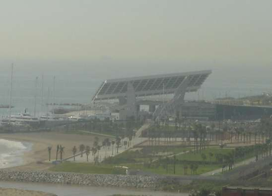

Fonts d’energia alternatives.#
Pàgina en desenvolupament
Encara estem treballant en aquest document.
Esperem oferir-vos properament el seu contingut.
Disculpeu les molèsties.
Estem d’acord que tota fot d’energia té una petjada ecològica. Però estem obligats a cercar fonts d’energia i centrals energètiques que ajudin a fer de la Terra un planeta sostenible.
Minihidràulica#
El concepte de minihidràulica és més polític que tècnic. Les tecnologies són les mateixes que hem vist a les central hidràuliques, a petita escala. Políticament cal una legislació que contempli aquestes instal·lacions dintre de les energies renovables amb incentius fiscals i econòmics i que afavoreixi la construcció i explotació d’aquestes centrals. A Espanya té aquesta consideració les centrals que produeixen menys de 5 MW. A altres països la cobertura arriba fins als 20 MW.
Catalunya, amb 239 centrals minihidràuliques que produeixen un total de 197 MW encapçala la seva implantació a Espanya. La major part d’aquestes centrals produeix entre 250 i 1000 kW.
Energia solar#
La Terra rep del Sol una energia anual d’uns 5,4·1024 J, unes 4500 vegades l’energia que es consumeix. L’energia solar, per tant, és una bona candidata a reemplaçar les fonts d’energia convencionals.
Naturalment, la potencia rebuda per m2 (anomenada irradiació o senzillament radiació solar mitjana, per la que utilitzem la lletra I que es mesura en \(W·m^{-2}\)) depèn de factors com la latitud, alçada, època de l’any… Tenint en compte que a més a més l’atmosfera redueix al 30% aquest valor (absorció, reflexió, dispersió) podem dir que tenim al nostre abast al voltant de 1000 \(W·m^{-2}\) d’energia del sol que podem aprofitar. Podem dir que a Catalunya rebem un flux d’energia radiant diari ϕr d’uns 15 MJ/\(m^2\)} .
questa energia solar la podem convertir directament en energia elèctrica (energia solar fotovoltaica) o en calor (energia solar tèrmica). La calor es pot utilitzar directament en sistemes de calefacció, assajos, soldadures… o convertir en energia elèctrica (centrals termosolars).
Energia solar fotovoltaica#
Les cèl·lules fotovoltaiques fan una conversió directa d’energia radiant en energia elèctrica utilitzant semiconductors.

Si bé als anys 70 el rendiment d’aquestes cèl·lules era inferior al 25 %, avui en dia s’han aconseguit cèl·lules amb un rendiment del 47 %, i les perspectives de millora amb nous materials com ara el grafè son esperançadores.
Per altra s’han abaratit molt: les de Si han baixat dels 76 \\(/W al 1977 a 0,30 \\\)/W al 2015.
Aquestes cèl·lules donen un voltatge i intensitat petits, per la qual cosa als panells fotovoltaics es connecten moltes d’elles en sèrie (per guanyar tensió) i paral·lel (per guanyar intensitat).
La tensió generada és CC. Poden estar estàtiques i aprofitar directament aquest CC: només caldrà cablejar els panells. Si volem que segueixin el Sol per millorar la producció haurem d’implementar un sistema de seguiment que posi les cèl·lules perpendiculars als raigs de llum. Si volem emmagatzemar l’energia caldrà posar bateries i un sistema de regulació de càrrega.

Si a més a més volem tenir AC ens caldrà un inversor. Si el consum no és local sinó que volem injectar aquesta energia a la xarxa encara haurem de instal·lar més aparells.
Per tot això les instal·lacions fotovoltaiques són molt diverses. Des d’alimentar una calculadora de butxaca, a alimentar un senyal de trànsit o un panell d’informació de la parada de bus, recarregar els portàtils d’un col·legi, generar 220 V AC a una masia o contribuir a la xarxa elèctrica nacional. Tot compta: cada kWh generat es un avanç cap a un model energètic sostenible.
Impacte ambiental#
Si bé la seva explotació és molt neta, hem d’anar en compte amb la petjada ecològica de la seva fabricació. No és el mateix utilitzar Si, present a la sorra comú, a utilitzar AsGa: el 25 d’abril de 1998 en trencar-se una presa 4600 ha de la conca del Guadiamar van ser contaminades pel As i Zn utilitzats per l’empresa sueca Boliden en la fabricació de les seves cèl·lules solars. L’aigua d’aquest riu alimenta el Parc Nacional de Doñana, clau per a la fauna de molts països. 20 anys després l’empresa encara no ha assumit els costos de la seva negligència, al voltant de 90 000 000 € que va costar la intervenció pública per controlar i compensar el desastre ecològic.
L’energia fotovoltaica pot ser tan neta com vulguem. Només hem d’assumir el cost i evitar materials contaminants.
Energia solar tèrmica#
Es una cálida tarde de verano en la Antigua Grecia. Has terminado de hacer tus compras en el mercado local o Ágora (toma nota) y vuelves para casa.
Com bé deia Sheldom a The Big Bang Theory, la calor que ens proporciona el Sol és una vella coneguda de la humanitat. Actualment intentem optimitzar el seu aprofitament. Veiem alguns exemples:
Un captador solar funciona com a trampa per a la radiació. Una coberta transparent permet entrar la llum del sol però reflecteix els infrarojos que no poden sortir. Un tubs que absorbeixen la radiació (pintats de negre) escalfen l’aigua que hi circula. Les parets aïllants eviten les pèrdues. Tot funciona com un hivernacle en miniatura, on s’aconsegueixen temperatures de fins a 80 °C. Molt útils per calefacció d’habitatges, piscines…
La concentració dels raigs de llum del sol per aconseguir grans temperatures és coneguda des de fa segles. La bola de coure daurat de 2,5 m de diàmetre que corona la cúpula de Brunelleschi a Fiorenza n’és un exemple. Leonardo da Vinci també utilitzava aquesta tècnica per fondre i soldar metalls. Miralls de foc, els anomenava.
A Font-Romeu hi ha un forn solar que segueix el mateix principi: un camp de 63 heliòstats (miralls que segueixen el Sol) alimenta un mirall parabòlic de 40 m d’alçada i 2000 m2 de superfície que concentra la potència recollida (1 MW) sobre una superfície de 20 cm de radi, que experimenta una temperatura que pot arribar fins als 3200 °C. Aquest forn és utilitzat per la indústria de l’espai d’arreu el món per fer assajos de materials: comportament a la reentrada a l’atmosfera de naus i d’altres condicions extremes, com ara el xoc tèrmic en activar el conjunt de cop, amb el brusc canvi de temperatura associat.
Diferents tecnologies s’estan experimentant per convertir aquesta energia solar tèrmica en elèctrica. Com a qualsevol central tèrmica, cal escalfar un fluid (energia cinètica) per moure un conjunt turbina (energia de rotació) / alternador (energia elèctrica).
Per exemple a la central d’Andasol el fluid és un oli mineral que s’escalfa dels 293 °C fins als 393 °C i que alimenta un generador de vapor, iniciant el cicle típic d’una central tèrmica.

Impacte ambiental#
En totes aquestes tecnologies la petjada ecològica més important es produeix en la fabricació, difícilment en la seva explotació. Naturalment cal estudiar cada cas particular.
Energia eòlica#
El vent és una altra poderosa font d’energia neta, utilitzada des de l’antiguitat i present arreu del mon. Encara es pot millorar molt la seva explotació. El gran repte tecnològic és la seva variabilitat: diferents intensitats, diferents alçades, direccions… que normalment canvien a una mateixa ubicació. S’han dissenyat diverses instal·lacions per optimitzar el seu aprofitament, la més comercialitzada és l’aerogenerador: una naveta o góndola que pot girar horitzontalment s’eleva amb una torre fins a l’alçada òptima per enfrontar-se al vent, la força del qual és recollit per unes pales connectades a un rotor. A l’interior de la naveta, mitjançant un multiplicador, aquest gir es transmet a un generador elèctric.
La naveta gira amb un servomecanisme que rep informació de la direcció i velocitat del vent gràcies a uns sensors que incorpora a la seva part superior. Normalment aquest sistema orienta les pales perpendicularment al vent, però si la intensitat del vent es molt forta el sistema reduirà la secció eficaç per evitar malmetre la instal·lació, fins-i-tot posant les pales paral·leles al vent quan el vent sigui massa intens, ja que posaria en perill la integritat de la instal·lació. També caldrà posar les pales paral·leles al vent quan la xarxa elèctrica sigui incapaç d’absorbir l’energia generada. Actualment aquesta situació és massa freqüent a la nit al nostre país, ja que no es poden desconnectar les centrals nuclears ni emmagatzemar l’excés d’energia produïda.
Un dels problemes en el disseny de les instal·lacions eòliques és la dependència cúbica de la potència amb la velocitat del vent. Si estudiem l’energia cinètica del cilindre de aire que impacta amb les pales de l’aerogenerador veiem que la podem expressar com:
\(E_c=\frac{1}{2}mv^2=\frac{1}{2}\rho V v^2=\frac{1}{2} \pi R^2 v t v^2\)
dividint per t tindrem la potència
\(P=\frac{1}{2} \rho \pi R^2 v^3\)
Agrupant les constants:
\(P=k v^3\)
Es a dir, un factor 3 en la velocitat del vent implica un factor 27 en la potència del vent incidint, i que pot posar en perill la integritat de la instal·lació.
Parcs eòlics#
Existeix una amplia gamma d’aerogeneradors amb potències que arriben als MW i que poden treballar de forma eficient amb vents de 3 m/s fins als 24 m/s. Típicament la potència màxima s’assoleix als 14 m/s.
No és fàcil trobar ubicacions on es donin aquests vents de forma regular (unes 2500 hores/any per ser rendibles) i a una mateixa alçada. Per això és normal aprofitar al màxim aquestes ubicacions, instal·lant un gran nombre d’aerogeneradors per aprofitar al màxim aquest recurs en els anomenats parcs eòlics. D’aquest manera també s’optimitzen costos, centralitzant l’adequació de l’energia produïda per a la xarxa elèctrica la seva connexió.
Un dels reptes actuals és l’aprofitament de l’energia eòlica al mar, amb plataformes on ubicar els aerogeneradors. Només cal sentir els parts meteorològics a les notícies per ser conscient de la dimensió del recurs que tenim a prop de les nostres costes. No és un problema fàcil: fixar l’estructura a una ubicació sotmesa a corrents, onades i marees, amb uns problemes diferents de corrosió al que trobem a les instal·lacions terrestres. Fins i tot trobarem projectes de construcció d’illes artificials per explotar aquestes ubicacions, com Power Link[Mar17], amb milers d’aerogeneradors i 30 GW de potència.
Autoconsum#
Tenint a l’abast instal·lacions eòliques de tota mida, així com de fotovoltaiques, no es estrany trobar instal·lacions a granges o petites indústries que combinin aquestes energies pel consum propi.
En aquest cas la producció és de CC, permetent el seu emmagatzemament amb bateries (que han experimentat una notable millora els darrers anys) i la seva conversió amb AC mitjançant onduladors o inversors.

Impacte ambiental#
Si bé l’energia eòlica és molt neta (no genera emissions de CO2 ni contaminants) té, com a qualsevol energia, una petjada ecològica: pensem en la fabricació i instal·lació dels seus components, l’impacte visual i acústic al seu entorn… Fins i tot no és estrany veure algun ocell migratori mort a prop d’un dels múltiples aerogeneradors a un parc eòlic per l’impacte amb les pales (problema comú amb els aeroports i que en aquest cas ningú en parla: tenint el mateix problema tenen les mateixes solucions).
Energies del mar#
Ja hem vist que l’energia eòlica al mar és un recurs important. Però trobarem moltes més formes d’energia als mars i oceans, i cal recordar que ocupen el 70% de la superfície del nostre planeta.
Energia mareomotriu#
Podem aprofitar el moviment de grans masses d’aigua salada en les marees construint dics per emmagatzemar i transformar aquest flux d’energia mitjançant turbines incorporades als dics. A Rance trobarem una central d’aquest tipus. El problema de les marees és que només es produeixen 2 cops al dia, però aquesta central ha obert una línia nova[Red13] en la recerca de centrals reversibles per a l’emmagatzemament d’energia sobrant a la xarxa elèctrica.
Energia de les onades (undimotriu)#
A les nostres costes l’energia de les onades o energia undimotriu representen una font d’energia important. Aprofitada fa segles, com el cas del molí fariner a la platja de Vilanova i la Geltrú, trobarem diversos dissenys per a aquestes instal·lacions, com la danesa Wave Dragon, on uns reflectors dirigeixen l’onada cap a un depòsit elevat i una turbina tipus Kaplan genera electricitat amb aquest salt d’aigua. Altres instal·lacions utilitzen càmeres pneumàtiques, boies, o conversors que oscil·len amb les onades. Cadascun d’aquest dissenys està optimitzat per a una distància de la costa, si utilitza o no elements flotants i les pròpies característiques de les onades a la seva ubicació.


Energia maremotèrmica del gradient tèrmic (OTEC)#
La diferència de temperatures entre aigües superficials i profundes es pot aprofitar amb diversos tipus de centrals OTEC (Ocean Thermal Energic Conversion).
Les centrals OTEC de cicle tancat utilitzen un fluid amb un punt d’ebullició baix, com l’amoníac (que té un punt d’ebullició de -33 °C a pressió atmosfèrica), per generar gas a pressió per moure una turbina.
Es tracta d’una central tèrmica on l’aigua s’ha reemplaçat per amoníac. L’aigua de la superfície actua com a font de calor, i l’aigua profunda com a refrigerant del condensador.

A les centrals OTEC de cicle obert l’aigua de la superfície entra en un recipient a baixa pressió provocant la seva ebullició. En alguns dissenys l’expansió del vapor fa girar directament una turbina, per tornar a estat líquid al condensador refrigerat per aigua profunda.
En altres dissenys s’utilitzen tècniques de bombeig de bombolles per aconseguir columnes d’aigua amb una alçada important, que generaren electricitat com a una central hidràulica.

Energia de les corrents marines.#
Diverses corrents marines, com ara ENSO (el Niño), travessen el planeta arrossegant una energia estimada de 5000 GW. S’han proposat diferents tecnologies per explotar aquesta energia, com ara generador semblants als eòlics fixats al fons marí.
Impacte ambiental#
Totes aquestes tecnologies d’aprofitament tenen diverses petjades ecològiques, penseu només en el canvi de règim de marees a Rance sobre la fauna marina o l’efecte d’extreure energia de les onades i la disminució de l’erosió i transport de material a la costa. Però cal destacar un element comú: estem parlant de extreure energia de processos globals del planeta. Si explotem de forma significativa l’energia transmesa, per exemple, per la corrent de El Niño els seus efectes climàtics poden ser a nivell planetari.
Energia geotèrmica#
La calor interna del nostre planeta és una altra font formidable d’energia. Només cal pensar en un volcà o en els géisers del parc de Yellowstone. O en les nombroses caldes al nostre voltant.
Els jaciments geotèrmics, zones del subsòl on aquest recurs és susceptible de ser aprofitat, es classifiquen segons la temperatura. Amb temperatures de 70 °C ja es pot generar electricitat de forma rendible, i als jaciments d’alta temperatura (T>150 °C) podem generar directament vapor d’aigua.
A les centrals geotèrmiques s’injecta aigua per un pou a la roca subterrània i es recull escalfada per una canonada. Aquesta aigua calenta transmet la calor a un bescanviador on es vaporitza aigua o un altre fluid, com ara isobutà, per fer moure les turbines.
Es a dir, una central tèrmica convencional on la font de calor és el jaciment geotèrmic.

Donada la localització geogràfica d’aquests jaciments, aquestes centrals les trobem concentrades en pocs països. Cal destacar les centrals de Geysers (USA, 1590 MW), Cerro Prieto (Mèxic, 820 MW), Larderello (Itàlia, 769 MW), Olkaria (Kenya, 727 MW), Imperial Valley (USA, 403 MW), Sarulla (Indonèsia, 330 MW), Tiwi (Filipines, 330 MW) i Hellishellði (Islàndia, 303 MW).
Impacte ambiental#
Si bé l’aigua escalfada pot contenir contaminants presents a les roques com ara CO2, Hg, As, Sb… típicament aquests productes es tornen a injectar a la roca, evitant l contaminació del seu alliberament. La pròpia construcció de la central pot afectar la estabilitat del terra, així com la seva explotació, en injectar aigua a la roca, fins-i-tot produint terratrèmols. Es va haver de suspendre un projecte de central a Basilea (Suïssa) ja que havia provocat més de 10000 sismes (arribant a 3,4 l’escala de Richter) als primers 6 anys d’injecció d’aigua. Per altra banda aquestes centrals poden trencar el cicle natural dels géisers, com va passar a Beowawe, Nevada.
Biomassa i residus renovables#
Amb biomassa ens referim al conjunt de matèria orgànica d’origen vegetal o animal, que inclou els materials procedents de la transformació natural o artificial.
Si bé aquest materials s’han utilitzat des de l’antiguitat, la cerca d’un model sostenible ha revolucionat el seu ús.
L’energia de la biomassa prové de la llum solar, que alimenta amb la fotosíntesis la piràmide alimentària de la vida.
El seu aprofitament no té un impacte mediambiental significatiu: el CO2 alliberat en la combustió dels seus productes él el mateix CO2 capturat a la fotosíntesis, amb una emissió neta nul·la. Tot així emissions d’altres productes com ara els òxids de nitrogen no és recomanable en zones incloses en plans d’actuació de millora de la qualitat de l’aire.
Diferents tractaments de la biomassa permeten el seu aprofitament. Després d’uns tractaments previs (homogeneïtzació, densificació) s’apliquen tractaments termoquímics (combustió, piròlisi, gasificació) o biològics (digestió anaeròbia, fermentació alcohòlica).
Amb la destil·lació de productes vegetals s’aconsegueixen biocarburants com ara el bioetanol i el biodièsel. El biogàs s’obté de tractaments biològics.
La incineració de deixalles domèstiques, amb filtres per evitar l’emissió de partícules contaminants i compostos nocius, o la disposició i metanització dels RSU són altres de les possibles aplicacions energètiques d’aquests residus.
Centrals nuclears de fusió#
Si bé fa dècades que utilitzem centrals de fissió nuclear, encara no disposem de centrals de fusió. Els avantatge són clars: tenim combustible arreu (deuteri i triti present a l’aigua), els productes generats (He) no són perillosos, no es tracta d’una reacció en cadena que es pugui descontrolar…
El problema és que encara no tenim una instal·lació que produeixi més energia que la gastada en iniciar la reacció nuclear. En aquest sentit cal destacar el projecte ITER (International Thermonuclear Experimental Reactor) d’un reactor tokamak, iniciat al 1986 i que hauria d’estar operatiu al 2025, iniciativa internacional que hauria d’aconseguir escalfar de forma uniforme el plasma d’hidrogen fins als 1,5·108 °C.
_(41783636452).jpg)
Posteriorment hauria de produir 10 vegades més energia que la gastada en el seu funcionament. L’ITER utilitzarà un plasma de ions deuteri i triti confinats a un tokamak amb un camp magnètic generat per 100 000 km de Nb3Sn superconductor a 4 K. La fusió d’aquests isòtops genera ions He (que per la seva càrrega queden confinats al tokamak, mantenint la seva temperatura) i allibera neutrons d’alta energia que, per no tenir càrrega, escapen del confinament del tokamak:
\(^2H + \ ^3H \to ^4He (3,52 MeV) + n (14,06 MeV)\)
Aquests neutrons escalfen l’aigua a pressió que circula fora del tokamak. En futurs reactors (DEMO serà el pas següent després del ITER) aquesta aigua a pressió escalfada generarà electricitat, de forma semblant a un reactor PWR de fissió.
Així com el deuteri és força abundant (un 0,015 % de l’hidrogen de l’aigua és deuteri), el triti rarament es troba a la natura, però es pot produir bombardejant Li amb neutrons. Per això a l’ITER es faran proves de producció de triti a alguns dels mòduls blanket que envolten el tokamak, on els neutrons produïts a la fusió es recombinaran amb àtoms de \(^6Li\), produint He i triti:
\(n+\ ^6Li \to \ ^3H + ^4He + 4,8 MeV\)
En una central que generés el seu propi triti, només es gastaria com a combustible \(^2H\) i \(^6Li\) . A un \(m^3\) d’aigua trobem 33 g de deuteri. El \(^6Li\) representa el 7,5% del Li. Els recursos terrestres de Li permetrien un funcionament de les centrals de fusió durant 1000 anys, però el Li també es pot obtenir de l’aigua de l’oceà, amb un estoc suficient per a 6 milions d’anys[].
Una vegada funcioni ITER, es treballarà en DEMO, el primer prototip de reactor nuclear de fusió autosuficient en triti, amb una producció contínua 24/7 de 300 a 500 MW[]. Però això serà al 2040.

Show code cell source
from IPython.display import YouTubeVideo
YouTubeVideo('XNcGpQCX8a0')
SPARC: l’alternativa del MIT més petita, barata… i propera#
Potser no calgui esperar al 2060 si el projecte del MIT té èxit. La clau: utilització de superconductors YBCO a 92 K, en front dels utilitzats a l’ITER a 4 K. Això permet un reactor més petit i econòmic, que potser sigui operatiu en només 4 anys. Llegiu aquest article a https://www.xataka.com/investigacion/reactor-fusion-nuclear-compacto-que-prepara-mit-promete-estar-listo-mucho-iter-tambien-ser-mucho-barato